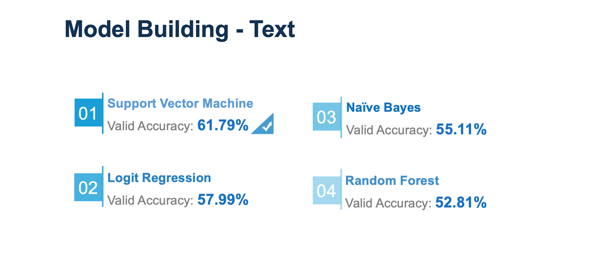

Data enthusiast with 4-years’ experience in aviation and consulting industries. Would love to connect!
Experience
Senior Analyst, Strategic Planning and Analysis
American Airlines, Fort Worth, TX
Created ad-hoc analyses using SQL and Excel to evaluate the performance of travel reward programs and led the migration of reporting processes from Excel to Tableau, delivering timely actionable insights that improved customer engagement and supported leadership in refining loyalty program strategies.
Developed profitability analyses and pricing models using SQL and Excel to forecast revenue margins for travel rewards initiatives, including partnered airlines and vacation package products. Assessed the current pricing structure and provided strategic recommendations to maximize profit and revenue.
Designed and implemented dynamic PowerBI and Tableau dashboards with SQL and DAX to analyze passenger and revenue performance across various sales incentive programs and customer segments. Collaborated cross-functionally with internal and external business users and IT team, ensuring timely enhancements and seamless report deployment.
Streamlined reporting processes by developing SQL macro scripts to consolidate data from multiple sources. Automated ETL workflows in Databricks using Python, improving data processing efficiency and accuracy. Established data validation standards to uphold reporting quality and ensure reliable business insights.
Facilitated efficient sales data modeling of 4.6 billion dimensionalized ticket, passenger, and revenue annual data in Anaplan. Continuously optimized the visualized data modeling tool based on updates in sales incentive program.
Coordinated among sales team, account directors, along with IT teams, to understand business requirements, troubleshoot technical issues, document user guides, and develop BI tools, facilitating streamlined workflows and effective communication.
Mar 2022 - Current
Data Engineer
Techwish, Sterling, VA
Accelerated the data modeling and data mapping 20 times faster by migrating the SAP and legacy system to the Incorta full-stack solution using AWS EC2 instances, Spark clusters, and Incorta Direct Data Platform.
Created interactive dashboards in the Incorta to analyze sales, inventory, and account receivables data.
Developed cloud-native data solutions with a combination of Azure Services, including Azure Data Lake Storage, Azure Databricks, Azure SQL database, and Azure Data Factory.
Ingested data from local files and on-premises SQL Server databases to cloud storage in AWS S3 and Azure Blob by developing end-to-end analytical pipelines using SQL, Python, and SQLAlchemy.
Apr 2021 - Mar 2022
Data Analyst
ATGWORK, Norcross, GA
Integrated data from multiple heterogeneous systems, including Postgres, Oracle, and other data sources, into Azure data lake using StreamSets Data Collector; aligned data format of patient claims from multiple healthcare providers.
Streamlined ETL processes and accommodated requirement changes from the analytics team to ingest, merge, and transform structured data by building and maintaining data pipelines with Python scripts and StreamSets SDK.
Sep 2020 - Apr 2021
Data Science Consultant
Indianapolis Colts, Indianapolis, IN
Implemented simulation-based optimization algorithms designed based on dynamic pricing methodology using R tooptimize the Colts' event ticket pricing strategy; increased ticket sales and revenue by 300%.
Performed data ETL processes with Python and R to merge 1 million+ rows of transactions from multiple sources.
Developed 6 predictive models for real-time ticket demand forecasting using R and evaluated model performance to identify the optimal model with the AUC score; provided managers with forward-looking opinions on market trends.
Created Tableau reporting dashboards to exhibit data visualization and demonstrate pricing range on the stadium map.
Jan 2020 - Apr 2020
Research Assistant
Purdue University, CNIT, West Lafayette, IN
Deployed digital forensics systems on Windows, IOS, and Andriod platforms to identify criminal data in mobile devices
Tested and debugged functional and visual components of the prototyped Android app in Java, wrote Android user manual
Collaborated with cross-functional teams in agile workflow and maintained weekly virtual meetings
September 2018 - December 2018
Database and Web Development Intern
Guangzhou Victel Optics Co. Ltd, Guangzhou, China
Upgraded $185,000 ERP system serving 300 people and reduced outsourcing cost of website and database redesign by 15%
Migrated the MySQL database to SQL Server by modifying data schema to improve data integrity and quality control
Created stored functions, procedures, triggers, and indexes based on business questions to improve database performance
Led project management efforts to design company website and admin dashboard with HTML/CCS and JavaScript
June 2017 - August 2017
Software Engineering Intern
Guangzhou JianKun Network Technology Development Co. Ltd, Guangzhou, China
Developed agricultural subsidy system serving 21 cities in Guangdong, China to manage and dispense allowances to local farmers
Tested and debugged the agricultural subsidy system with Java, edited and finalized the bidding documents
Embedded Tableau visualizations in presentation PowerPoint to convey the historical agricultural data
June 2016 - August 2016
Education
The Ultimate Hands-On Hadoop - Tame your Big Data!
Udemy, Certificated Course
MapReduce, HDFS, Spark, Flink, Hive, HBase, MongoDB, Cassandra, Kafka and 20+ more Hadoop ecosystem technologies
July 2020 - Present(In Progress)
A/B Testing by Google
Udacity, Free Course
A/B tests Design and Analysis
June 2020(Finished)
BUSINESS ANALYTICS & INFORMATION MANAGEMENT
Purdue University, Master of Science
Coursework: Unstructured Data Analytics, Predictive and Statistical Analytics, Machine Learning, Business Analytics, Operations Management, IT Project Management, Microeconomics, Data Mining, Management of Organizational Database, Communication and Persuasion Using Data Visualizations, Data Structures and Algorithms in Python, Advanced Excel (VBA, Modeling, Optimization, and Simulation)
June 2019 - May 2020(Graduated)
FUNDAMENTALS OF DEEP LEARNING FOR NLP
NVIDIA DEEP LEARNING INSTITUTE, Bootcamp
Word Embedding, Text Classification, Text Translation
November 2019(Certificated)
COMPUTER & INFORMATION TECHNOLOGY
Purdue University, Bachelor of Science
Coursework: Object-Oriented Programming, Android Mobile Application Development, System Anlysis and Design, System Administration, Probability Models, Enterprise Data Management, Biomedical Informatics, Business Statistics, IT Project Management, Data Warehousing
August 2015 - May 2019(Graduated)
Portfolio
Predict Podcast Listening Time
Predictive Mdl | Mdl Tunning
Sports Ticket Dynamic Pricing
Predictive Mdl | Optimization
Craigslist Auto Categorization
Web Scraping | NLP
Air Quality ShinyApp
Predictive Modeling
Skills
Data Science & Analytical Tools
Data Modeling -
Statistical/Predictive Modeling, Machine Learning, Natural Language Processing
Relational Database -
Oracle SQL PL/SQL, MS SQL Server, MySQL
Business Intelligence -
PowerBI, Tableau Desktop, Google Analytics
Dig Data & NoSQL -
Hadoop/Hive, Spark, MongoDB
Data Engineering -
Data Wrangling, Web Scraping, ETL Processes
R -
caret, car, h2o, shiny, dplyr, CRAN, tidyverse, ggplot2, Plotly, leaflet, R Markdown
SAS - Jupyter Notebook - Advanced Excel
Computing
Software Development -
Java, C#, Data Structures and Algorithms, Andriod App Development
System Anlysis & Design -
SDLC, MS Project, IT Project Management
Web Frontend Development -
HTML/CSS
System Administration -
Linux/Unix, Windows
Additional
Professional Verbal/Written Communication
Critical Thinking & Problem Solving
Cross-Functional Team Collaboration
Agile Development & Scrum
Certificates
Tableau Desktop Specialist
Oracle Database SQL Certified Associate
SAS Certified Specialist: Base Programming Using SAS 9.4
Nvidia Fundamentals of Deep Learning For NLP
Google Analytics for Beginners
Dynamic Pricing For Sports Event Ticket
Deployment of dynamic pricing methodologies uisng predictive model to estimate real-time market ticket demand and optimization algorithm to automate pricing adjustment
A demo version of craigslist auto-categorization feature in Chicago area
Craigslist is an American classified advertisements website with sections devoted to jobs, housing, for sale, items wanted, services, community, gigs, résumés, and discussion forums. The website is advertiser-oriented. Advertisers can easily publish advertisements in a flexible andunstructured format, typically shown as text description and/or uploaded images. However, this incurs inconvenience for ad-viewers to extract relevant information as well as brings a high cost for platform managers to maintain and organize the website.
The objective of the project is to deploy NLP approches including text mining and image recognition for the auto categorization feature on Craigslist website to improve the ad-viewers’ experience and help platform managers to easily manage the platform, without changing the experience of advertisers.
As a demo version of the auto categorization functionality, this project extracted all categorized ad posts in Chicago area under "For Sale" as training dataset, excluding unstrunctured ad posts under "General" sub-category as testing dataset. Then, training dataset was used for predictive/NLP modeling, and testing dataset was then used to test on predictve models for text mining and the pretrained Convolution Neural Net(CNN) architectures for image recognition.

Date: Octorber 2019 - December 2019
Client: Craigslist
Category: Predictive Modeling, NLP
Beijing Air Quality Prediction ShinyApp
A intuitive and user friendly dashboard reports historical meteorological data/air quality trends and forecasts haze weather condition
Air polution in Beijing, China has been a serious environment problem endangering health of Beijing residents and facing local industries and governments for decades. This application explores the hidden data patterns and correlations between variables of multi-site air quality stations in Beijing, China. Using predictive modeling prediction, users are able to foresee the PM 2.5 and PM 10 concentrations and plan for their daily activities.
With the goals to predict pollution level for travel agency tour scheduleing and planning as well as to provide excellent user experience, this application is created with a main feature of an air quality "calculator" floating upon an interative map of Beijing city. The "calculator" generates air quality prediction result based on the predictive model trained from historical meteorological data from different districts in Beijing. Other features are listed below:
Features and Functionalities
Descriptive data visualizations generated from configured variable selections
Prediction results generated from predictive models and user input
Data views in data tables with adjustable filters
Date: August 2019 - October 2019
Client: Imperial Travel LLC
Category: Predictive Modeling
Project
desc
Date:
Client:
Category: Data Science
Spanish Translation A/B Testing
A data-preprocessing automation implementation for identifying and removing unbalanced and abnormal data in A/B Testing
Company XYZ is a worldwide e-commerce site with localized versions of the site. It's observed that Spain-based users have a much higher conversion rate than any other Spanish-speaking country, and it's also fact that all Spanish- speaking countries had the same translation of the site which was written by a Spaniard. To verify the potential association between variations of translation version and the conversion rate, an A/B test was launched with the hypothesis that localized translation will lead to higher conversion rate and new translation version written by a local (Argentinian users would see a translation written by an Argentinian, Mexican users by a Mexican). However, the negative test result indicated that non-localized translation was better.
This project verifies the AB test result and discovers the abnormalities within datasets using the exploratory data analysis approach. To avoid failure of future implementaion of this A/B test, an automation algorithm is also created to detect and remove any unbalanced and abnormal data.
Date: August 2020
Source: A Collection of Data Science Take-home Challenges by Giulio Palombo
Category: A/B Testing, automation
Do It List
A student-oriented productivity application with comprehensive functionalities of calendar view/checklist/timer
Calendar and task management applications have become increasingly prevalent among college students, and the design of Do-It-List is motivated by student-centric mindsets. This application combines the timer with organizable checklist and calendar layouts, which can be switching among daily/weekly/monthly views. With the timer, users can keep track of their working sessions spent on a specific task. To align with life-study style and improve organization functionality, the app is implemented with task subject/course categorization feature.
It's the ultimate productivity app for task management, habit tracking, productivity tracking, and schedule planning which will motivate student to stay focused and get coursework assignments/tasks done.